Mọi mô hình 3D, chân dung và icon đang có trong game, chụp cùng một góc, cùng ánh sáng trận, cùng tỉ lệ trong mỗi nhóm. Chưa sửa asset nào. Trang này để chọn tướng chuẩn trước khi viết chuẩn hình.
Cách đọc nhãn. Game chưa có chuẩn hình, nên “Đạt” ở đây nghĩa là cùng họ với phần đông asset đã duyệt: trụ, lính, Brakk — khối mập 3–4 đầu, sơn tay mịn, viền vàng. “Lệch” là khác họ đó, không phải xấu. Nếu chọn tướng chuẩn theo hướng người lớn mảnh (Phong Tiễn) thì nhãn của các tướng đảo lại.
Tóm tắt
39Đạt
34Lệch
3Mượn tạm
0Chưa có
Tướng chia hai họ tỉ lệ. Brakk, Noctis, Duy Anh, Gorran là khối mập 3–4,5 đầu. Myra, Vexa, Phong Tiễn là người lớn mảnh 6–6,5 đầu (D-304). Đây là nguồn chính của cảm giác “mỗi tướng một kiểu”. Ở góc camera trận, họ mảnh nhỏ và khó đọc hơn rõ rệt.
Cây, bụi, hoa lá là màu phẳng không vân, trong khi đá có vân vẽ tay và mặt đất vẽ tay. Lá cam (plant_orange) và cây thu là vật nổi nhất màn hình, lấn cả tướng.
Quái rừng là họ thứ ba: low-poly mặt phẳng kiểu gấp giấy (gấu, sói, tê giác), khác cách sơn mịn của tướng và lính. Gấu, sói, tê giác có 49–56 xương, gấp đôi tướng.
Chân dung có ba kiểu: Duy Anh (ô vuông nền tối, mặt em bé), Myra / Vexa / Noctis (anime chibi nét mảnh), Brakk / Gorran và 4 tướng mới (bán thân hoạt hình nét dày).
Icon chiêu có hai đời: 6 tướng đầu viền mảnh, mảng phẳng, hình nhỏ trong khung; 4 tướng mới khung vàng dày, hình lấp đầy, tô bóng nhiều lớp. Icon trạng thái là hình phẳng kiểu emoji, khác cả hai.
Phần đã đồng bộ: công trình (trụ, nhà chính, fountain), lính, mặt đất và nước, icon trang bị. Số tam giác và cỡ ảnh màu cũng đều: tướng 2,5–3,6 nghìn tam giác, 23 xương, ảnh màu 1024.
Trong trận, góc camera thật
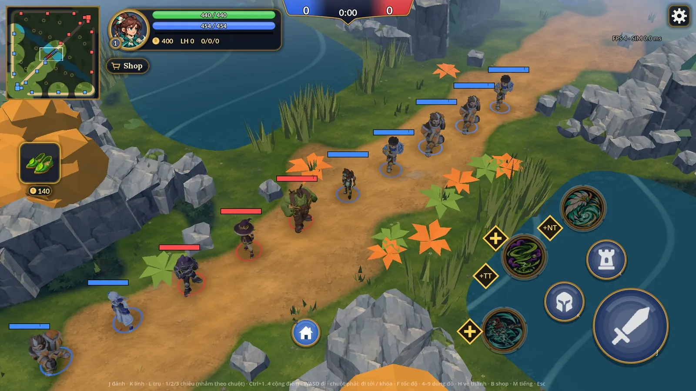
Cả 10 tướng xếp dọc lane giữa (SIM dừng). Từ dưới lên: Thạch Giáp và Huyết Cự Nhân (mượn Brakk), Myra, Noctis, Vexa, Gorran, Phong Tiễn, Thợ Săn (mượn Duy Anh), Brakk, Duy Anh. Phong Tiễn ở giữa nhỏ hẳn so với Gorran và Brakk hai bên; lá cam và cây thu bắt mắt hơn tướng.
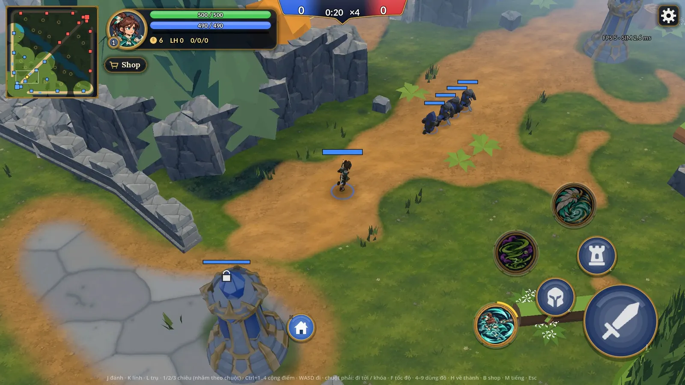
0:20 — trụ, đá lát base, thông và vách đá. Trụ và mặt đất cùng cách sơn; thông màu phẳng.
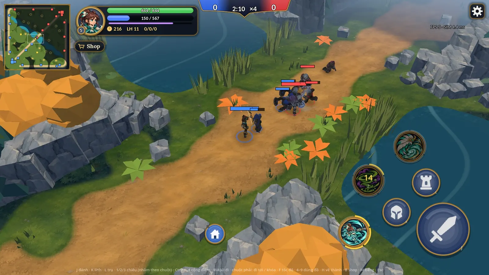
2:10 — giao tranh lính. Lính đọc được nhờ khối mập và màu phe; Phong Tiễn mảnh, lẫn vào cỏ.
Ảnh chụp bằng trình vẽ Mobile (Vulkan) như trên điện thoại, 1920 × 1080, trận 3v3 bot, tua ×4.
Tướng
Khung ảnh cao 2 m cho mọi tướng, lính và quái thường, nên so được cỡ với nhau. Mỗi tướng hai góc, tư thế đứng. Dưới mỗi tướng là chân dung và icon chiêu; ô “Thân 2D” trống ở 4 tướng mới vì bản 3D không dùng ảnh thân.
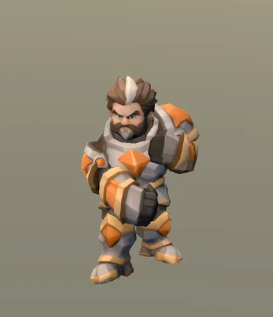
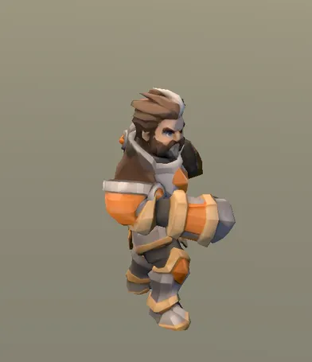
Brakk · Thiết Quyền Đạt
3.071 tam giác · 23 xương · 11 hoạt ảnh · ảnh màu 1024×1024 · cao 1,25 m
~4,5 đầu, vai rộng. Chi tiết nhiều nhất (dây đai, bình thuốc, hai kiếm) mà vẫn đọc được. Da xanh lá bão hòa hơn bảng màu chung một bậc. Có da đỏ Cuồng Hóa riêng.
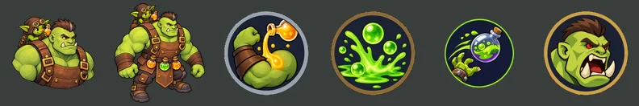
Chân dungThân 2DNội tạiQWR
Chân dung, iconĐạt Chân dung cùng kiểu Brakk. Icon W nhỏ hơn hẳn các icon khác (khung thu vào), cần vẽ lại cho bằng cỡ.
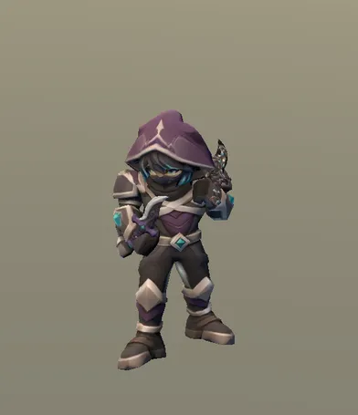
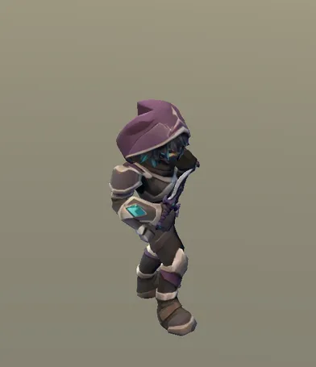
Noctis · Sát Ảnh Đạt
3.490 tam giác · 23 xương · 13 hoạt ảnh · ảnh màu 1024×1024 · cao 1,2 m
Chibi ~3 đầu, đầu to nhất dàn, mắt to kiểu em bé. Khối mập, viền vàng hợp với lính và trụ, nhưng mặt trẻ con lệch hẳn Brakk / Gorran. Ảnh màu sáng, bão hòa cao.
Chân dungThân 2DNội tạiQWR
Chân dung, iconLệch Chân dung ô vuông có nền tối, mặt em bé — khác hẳn 9 tướng còn lại (bán thân nền trong). Icon chiêu viền mảnh, hình nhỏ trong khung; 2 icon có vẽ cả nhân vật.
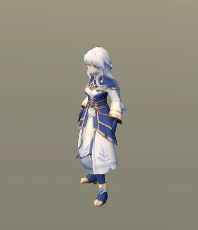
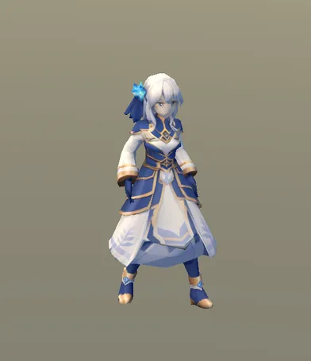
Myra · Pháp sư Lệch
2.506 tam giác · 23 xương · 11 hoạt ảnh · ảnh màu 1024×1024 · cao 1,3 m
~6 đầu, tay chân mảnh. Mũ to cứu được bóng dáng nên trong trận vẫn nhận ra. Tông tím nâu trầm, ít viền vàng.
Chân dungThân 2DNội tạiQWR
Chân dung, iconLệch Chân dung anime chibi, rất nhiều chi tiết nhỏ, ở cỡ HUD thành mảng rối. Icon chiêu dùng hình người xám — kiểu riêng, không tướng nào khác có.
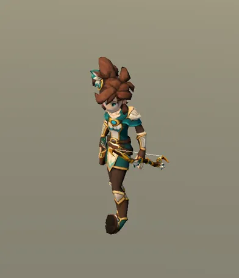
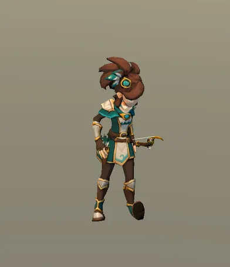
Phong Tiễn · Cung Gió Lệch
3.085 tam giác · 23 xương · 10 hoạt ảnh · ảnh màu 1024×1024 · cao 1,3 m
~6,5 đầu, mảnh nhất dàn; trong trận là tướng nhỏ và khó đọc nhất. Bù lại quy trình mới nhất và sạch nhất (D-348): hoạt ảnh riêng cho từng chiêu, dây cung vẽ bằng code.
Chân dungThân 2DNội tạiQWR
Chân dung, iconĐạt Chân dung theo chuẩn Brakk (D-347). Icon chiêu đời mới: khung vàng dày, hình lấp đầy khung, tô bóng nhiều lớp — đẹp hơn nhưng lệch đời đầu.
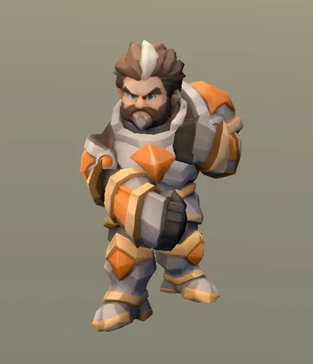
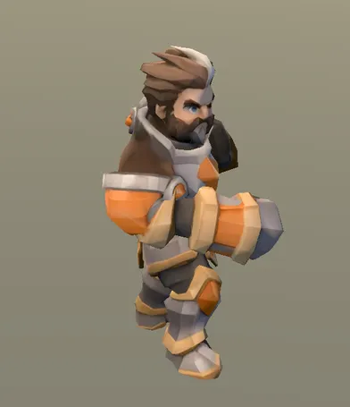
Huyết Cự Nhân · Khổng Lồ Mượn tạm
3.071 tam giác · 23 xương · 11 hoạt ảnh · ảnh màu 1024×1024 · cao 1,5 m
1.484 tam giác · 23 xương · 6 hoạt ảnh · ảnh màu 1024×1024 · cao 0,85 m
Nguồn: Tripo → afk.ai · creep_melee
~2,5 đầu, khối mập, màu phe rõ (khiên + áo). Cùng họ Brakk.
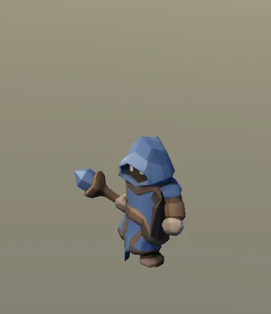
Lính đánh xa Đạt
1.556 tam giác · 23 xương · 6 hoạt ảnh · ảnh màu 1024×1024 · cao 0,85 m
Nguồn: Tripo → afk.ai · creep_ranged
~2,5 đầu, áo trùm màu phe. Ít chi tiết hơn lính cận chiến nhưng cùng họ.
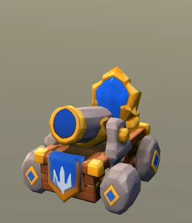
Xe công thành Đạt
2.484 tam giác · 6 xương · 5 hoạt ảnh · ảnh màu 1024×1024 · cao 1,0 m
Nguồn: Tripo → afk.ai · creep_siege
Sơn tay mịn, viền vàng dày, cùng bộ với trụ. Chỉ 6 xương (xương cứng tự làm bằng Blender). Bão hòa cao hơn lính bộ.
Quái rừng
Quái thường chụp khung 2 m như tướng; hai golem boss khung 4,2 m.
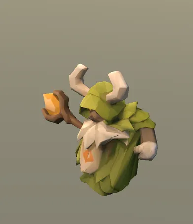
Pháp sư rừng Lệch
2.083 tam giác · 23 xương · 6 hoạt ảnh · ảnh màu 1024×1024 · cao 1,15 m
Nguồn: Tripo → afk.ai · neutral_shaman
Mặt phẳng góc cạnh (low-poly thấy rõ từng mặt), gần như không có chi tiết mặt. Khác cách sơn mịn của tướng và lính.
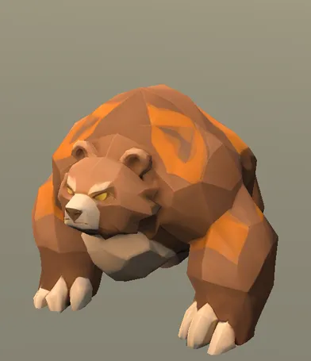
Gấu Lệch
2.707 tam giác · 49 xương · 5 hoạt ảnh · ảnh màu 1024×1024 · cao 1,3 m
Nguồn: Tripo → afk.ai · neutral_bear
Low-poly mặt phẳng kiểu gấp giấy, cam bão hòa mạnh, rune sáng. Là họ hình riêng của quái rừng (D-307b) — cần quyết giữ họ này hay kéo về họ tướng. 49 xương, gấp đôi tướng.
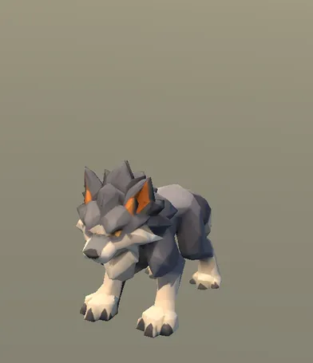
Sói Lệch
2.466 tam giác · 49 xương · 5 hoạt ảnh · ảnh màu 1024×1024 · cao 0,95 m
Nguồn: Tripo → afk.ai · neutral_wolf
Low-poly mặt phẳng, xám lạnh. Cùng họ với gấu, khác họ tướng. 49 xương.
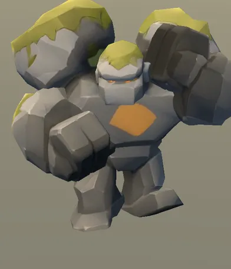
Golem đá (trại lớn) Lệch
2.044 tam giác · 23 xương · 6 hoạt ảnh · ảnh màu 1024×1024 · cao 1,7 m
Nguồn: Tripo → afk.ai · neutral_buffalo
Golem đá mặt phẳng, rêu vàng chanh. Hợp với đá cảnh vật hơn là với tướng.
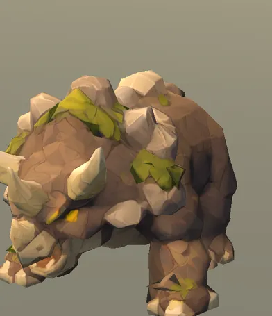
Tê giác đá Lệch
2.647 tam giác · 56 xương · 5 hoạt ảnh · ảnh màu 1024×1024 · cao 1,3 m
Nguồn: Tripo → afk.ai · rhino
Đá low-poly + rêu, theo ảnh mẫu người chơi (D-307b). Chi tiết dày hơn gấu / sói. 56 xương — nhiều nhất game.
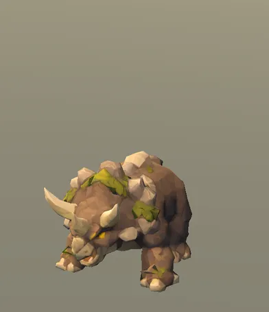
Tê giác đá con Lệch
2.647 tam giác · 56 xương · 5 hoạt ảnh · ảnh màu 1024×1024 · cao 0,75 m
Nguồn: Tripo → afk.ai · rhino_small
Cùng mô hình tê giác, thu nhỏ 0,75.
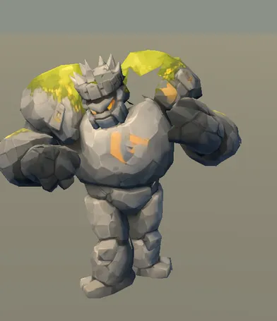
Golem Rêu (boss) Lệch
2.817 tam giác · 23 xương · 6 hoạt ảnh · ảnh màu 1024×1024 · cao 3,1 m
Nguồn: Tripo → afk.ai · golem_moss
Đá khối + rune, sơn mịn hơn gấu / sói — nằm giữa hai họ. Cao 3,1 m, đọc tốt.
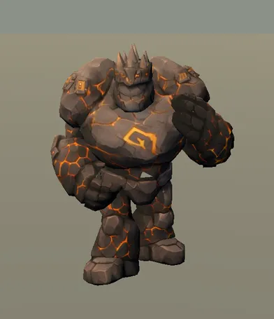
Golem Dung Nham (boss) Lệch
2.963 tam giác · 23 xương · 6 hoạt ảnh · ảnh màu 1024×1024 · cao 3,1 m
Nguồn: Tripo → afk.ai · golem_lava
Như Golem Rêu, tông nâu đen + khe dung nham. Tối, dễ chìm vào vách đá.
Công trình và vật bay
Công trình khung 6 m; ếch và đạn khung 1,6 m.
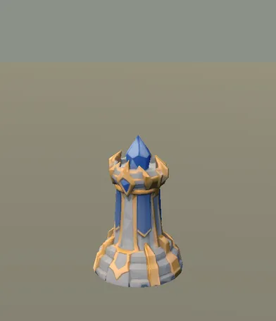
Trụ T1–T3 · xanh Đạt
2.486 tam giác · ảnh màu 1024×1024 · cao 2,55 m
Nguồn: Codex vẽ concept → Tripo · tower_t1_blue
Sơn tay mịn, đá be ấm, viền vàng, pha lê phe. Bộ công trình đồng bộ với nhau; đá be ấm lệch nhẹ với đá xám lạnh của cảnh vật (đã ghi ở D-312).
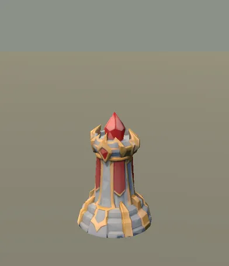
Trụ T1–T3 · đỏ Đạt
2.486 tam giác · ảnh màu 1024×1024 · cao 2,55 m
Nguồn: Codex vẽ concept → Tripo · tower_t1_red
Như bản xanh, đổi ảnh màu theo phe.
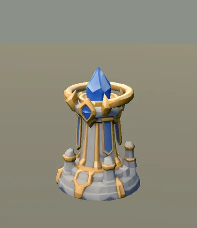
Trụ T4 · xanh Đạt
2.500 tam giác · ảnh màu 1024×1024 · cao 3,3 m
Nguồn: Codex vẽ concept → Tripo · tower_t4_blue
Cùng bộ với trụ T1, thêm vành vàng và cột nhỏ.
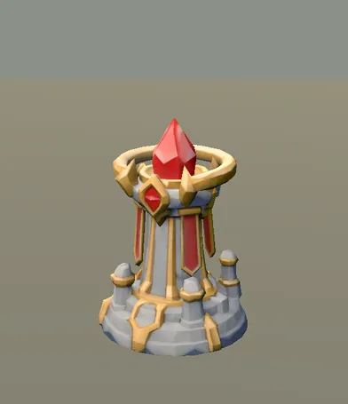
Trụ T4 · đỏ Đạt
2.500 tam giác · ảnh màu 1024×1024 · cao 3,3 m
Nguồn: Codex vẽ concept → Tripo · tower_t4_red
Như bản xanh.
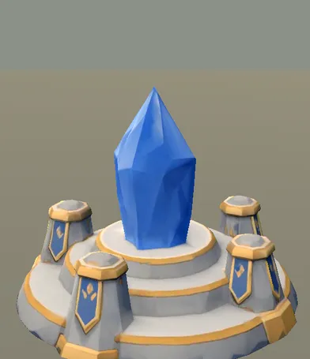
Nhà chính · xanh Đạt
3.000 tam giác · ảnh màu 1024×1024 · cao 3,6 m
Nguồn: Codex vẽ concept → Tripo · core_blue
Cùng bộ: đá be, viền vàng, cờ phe. Pha lê lớn một màu phẳng, ít chi tiết so với phần đế.
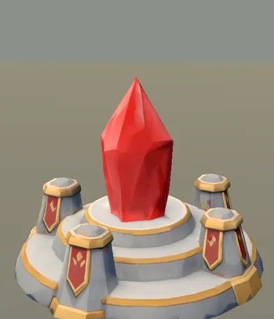
Nhà chính · đỏ Đạt
3.000 tam giác · ảnh màu 1024×1024 · cao 3,6 m
Nguồn: Codex vẽ concept → Tripo · core_red
Như bản xanh.
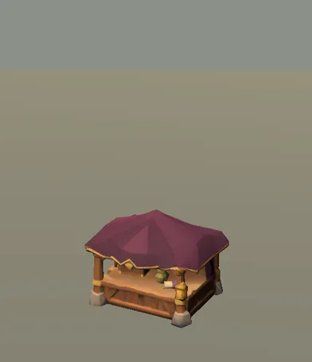
Cửa hàng ẩn Đạt
1.995 tam giác · ảnh màu 1024×1024 · cao 1,6 m
Nguồn: Codex vẽ concept → Tripo · shop
Gỗ nâu + mái đỏ rượu, sơn mịn. Không có viền vàng nên hơi rời bộ công trình, nhưng cùng cách sơn.
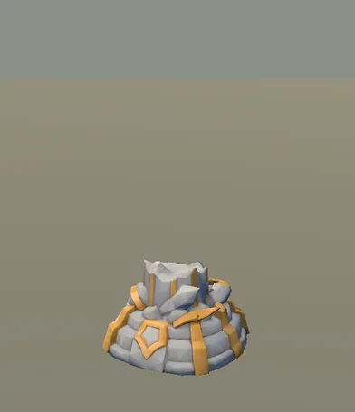
Trụ đổ Đạt
1.492 tam giác · ảnh màu 1024×1024 · cao 1,3 m
Nguồn: Codex vẽ concept → Tripo · rubble
Cùng bộ với trụ.
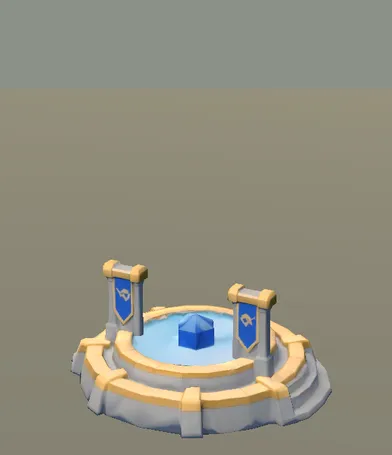
Fountain Đạt
2.500 tam giác · ảnh màu 1024×1024 · cao 1,5 m
Nguồn: Codex vẽ concept → Tripo · fountain
Cùng bộ với trụ và nhà chính.
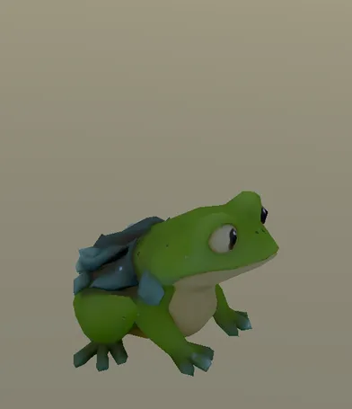
Ếch (hóa ếch) Đạt
1.498 tam giác · ảnh màu 2048×2048 · cao 0,6 m
Nguồn: Tripo · hex_frog
Sơn mịn kiểu hoạt hình. Ảnh màu 2048 — gấp đôi mọi mô hình khác, nên hạ về 1024.
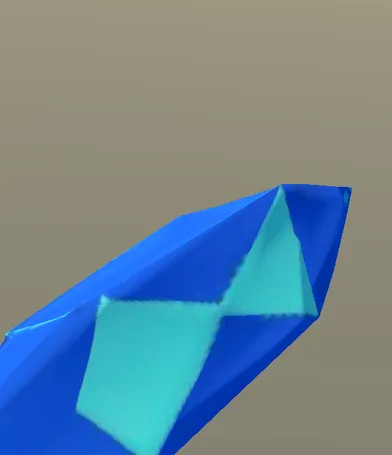
Đạn xe công thành Lệch
200 tam giác · ảnh màu 256×256 · cao 0,6 m
Nguồn: Tripo · siege_bolt
Khối xanh phẳng, ảnh màu 256 nhòe. Bay nhanh nên ít ai nhìn kỹ.
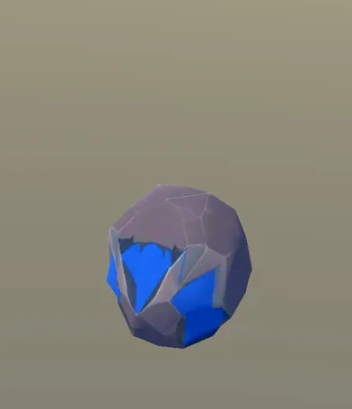
Đá trụ bắn Đạt
300 tam giác · ảnh màu 256×256 · cao 0,6 m
Nguồn: Tripo · siege_rock
Đá + lõi màu phe. Ảnh màu 256 đủ dùng vì bay nhanh.
Cảnh vật
28 mô hình dựng bằng code Blender, chụp với đúng vật liệu của trận, cỡ bằng cỡ thường đặt trên map. Khung 1,4 m, 2,8 m hoặc 6,4 m tùy vật.
Đá và tường
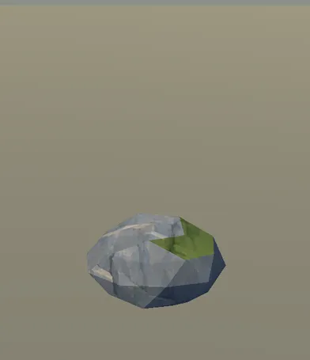
boulder_a Đạt
80 tam giác · màu đỉnh, không ảnh · đặt 29 chỗ · cao 0,64 m
Nguồn: Blender dựng bằng code (style_kit.py), màu đỉnh · boulder_a
Vân đá + mảng rêu. Hợp bộ đá.
boulder_b Đạt
80 tam giác · màu đỉnh, không ảnh · đặt 35 chỗ · cao 0,67 m
Nguồn: Blender dựng bằng code (style_kit.py), màu đỉnh · boulder_b
Như boulder_a.
parapet Đạt
132 tam giác · màu đỉnh, không ảnh · đặt 314 chỗ · cao 1,2 m
Nguồn: Blender dựng bằng code (style_kit.py), màu đỉnh · parapet
Vân tường đá vẽ tay, cùng tông đá chung.
rock_low Đạt
48 tam giác · màu đỉnh, không ảnh · đặt 291 chỗ · cao 1,19 m
Nguồn: Blender dựng bằng code (style_kit.py), màu đỉnh · rock_low
Có vân đá vẽ tay phủ lên (rock_face) — hợp với mặt đất vẽ tay.
rock_small Đạt
48 tam giác · màu đỉnh, không ảnh · đặt 133 chỗ · cao 0,48 m
Nguồn: Blender dựng bằng code (style_kit.py), màu đỉnh · rock_small
Như rock_low.
rock_tall Đạt
46 tam giác · màu đỉnh, không ảnh · đặt 238 chỗ · cao 2,54 m
Nguồn: Blender dựng bằng code (style_kit.py), màu đỉnh · rock_tall
Như rock_low.
rock_wide Đạt
46 tam giác · màu đỉnh, không ảnh · đặt 226 chỗ · cao 1,93 m
Nguồn: Blender dựng bằng code (style_kit.py), màu đỉnh · rock_wide
Như rock_low.
Cây
pine_l Lệch
178 tam giác · màu đỉnh, không ảnh · đặt 86 chỗ · cao 5,56 m
Nguồn: Blender dựng bằng code (style_kit.py), màu đỉnh · pine_l
Mỗi mặt một màu phẳng, không vân. Đứng cạnh đá có vân và đất vẽ tay thì trông như bộ asset khác. To nhất cảnh (5,6 m).
pine_m Lệch
150 tam giác · màu đỉnh, không ảnh · đặt 47 chỗ · cao 4,21 m
Nguồn: Blender dựng bằng code (style_kit.py), màu đỉnh · pine_m
Như pine_l.
pine_s Lệch
122 tam giác · màu đỉnh, không ảnh · đặt 15 chỗ · cao 2,77 m
Nguồn: Blender dựng bằng code (style_kit.py), màu đỉnh · pine_s
Như pine_l.
tree_autumn Lệch
150 tam giác · màu đỉnh, không ảnh · đặt 48 chỗ · cao 3,52 m
Nguồn: Blender dựng bằng code (style_kit.py), màu đỉnh · tree_autumn
Tán cam phẳng, bão hòa mạnh, không vân — vật nổi nhất màn hình, lấn cả tướng.
tree_round Lệch
150 tam giác · màu đỉnh, không ảnh · đặt 8 chỗ · cao 3,23 m
Nguồn: Blender dựng bằng code (style_kit.py), màu đỉnh · tree_round
Tán xanh phẳng, không vân.
Cỏ, bụi, hoa
bush_a Lệch
76 tam giác · màu đỉnh, không ảnh · cao 0,97 m
Nguồn: Blender dựng bằng code (style_kit.py), màu đỉnh · bush_a
Chùm tam giác nhọn sẫm màu, phẳng. Che tướng đúng luật bụi cỏ nhưng nét gai nhọn khác mọi thứ còn lại.
bush_b Lệch
66 tam giác · màu đỉnh, không ảnh · cao 0,95 m
Nguồn: Blender dựng bằng code (style_kit.py), màu đỉnh · bush_b
Như bush_a.
bush_c Lệch
84 tam giác · màu đỉnh, không ảnh · cao 1,15 m
Nguồn: Blender dựng bằng code (style_kit.py), màu đỉnh · bush_c
Như bush_a.
flowers Lệch
78 tam giác · màu đỉnh, không ảnh · đặt 48 chỗ · cao 0,36 m
Nguồn: Blender dựng bằng code (style_kit.py), màu đỉnh · flowers
Lá phẳng to, hoa trắng tam giác.
grass_tuft Lệch
8 tam giác · màu đỉnh, không ảnh · đặt 342 chỗ · cao 0,41 m
Nguồn: Blender dựng bằng code (style_kit.py), màu đỉnh · grass_tuft
8 tam giác, lá nhọn phẳng. Nhỏ nên ít hại, nhưng rải 342 chỗ.
lily Đạt
8 tam giác · màu đỉnh, không ảnh · đặt 16 chỗ · cao 0,0 m
Nguồn: Blender dựng bằng code (style_kit.py), màu đỉnh · lily
Lá súng phẳng trên mặt nước, nhỏ, hợp nước.
mushrooms Lệch
400 tam giác · màu đỉnh, không ảnh · đặt 6 chỗ · cao 0,56 m
Nguồn: Blender dựng bằng code (style_kit.py), màu đỉnh · mushrooms
Đỏ gắt, chấm trắng tam giác. Chi tiết nhiều nhất bộ cảnh (400 tam giác) mà chỉ đặt 6 chỗ.
plant_green Lệch
14 tam giác · màu đỉnh, không ảnh · đặt 103 chỗ · cao 0,19 m
Nguồn: Blender dựng bằng code (style_kit.py), màu đỉnh · plant_green
Như plant_orange, màu xanh nõn.
plant_orange Lệch
14 tam giác · màu đỉnh, không ảnh · đặt 137 chỗ · cao 0,19 m
Nguồn: Blender dựng bằng code (style_kit.py), màu đỉnh · plant_orange
14 tam giác, lá cam phẳng to bằng nửa tướng. Lệch nặng nhất trong cảnh vật: màu gắt, không vân, tranh chỗ với tướng.
reeds Lệch
15 tam giác · màu đỉnh, không ảnh · đặt 176 chỗ · cao 1,29 m
Nguồn: Blender dựng bằng code (style_kit.py), màu đỉnh · reeds
Lá dài phẳng, cao 1,3 m — ngang tướng, che tướng ở mép sông.
Vật trang trí
bones Đạt
308 tam giác · màu đỉnh, không ảnh · đặt 15 chỗ · cao 0,46 m
Nguồn: Blender dựng bằng code (style_kit.py), màu đỉnh · bones
Xương trắng ngà, khối đơn giản.
campfire Đạt
284 tam giác · màu đỉnh, không ảnh · đặt 6 chỗ · cao 0,65 m
Nguồn: Blender dựng bằng code (style_kit.py), màu đỉnh · campfire
Đá + củi, lửa vẽ bằng shader trong trận.
crystals Đạt
110 tam giác · màu đỉnh, không ảnh · đặt 8 chỗ · cao 2,02 m
Nguồn: Blender dựng bằng code (style_kit.py), màu đỉnh · crystals
Pha lê xanh, hợp pha lê trụ.
log Đạt
44 tam giác · màu đỉnh, không ảnh · đặt 18 chỗ · cao 0,65 m
Nguồn: Blender dựng bằng code (style_kit.py), màu đỉnh · log
Gỗ + rêu, khối đơn giản, ổn.
stump Đạt
236 tam giác · màu đỉnh, không ảnh · đặt 23 chỗ · cao 0,65 m
Nguồn: Blender dựng bằng code (style_kit.py), màu đỉnh · stump
Gỗ có vòng năm, ổn.
totem Lệch
122 tam giác · màu đỉnh, không ảnh · đặt 6 chỗ · cao 2,5 m
Nguồn: Blender dựng bằng code (style_kit.py), màu đỉnh · totem
Cột gỗ phẳng, gai trắng, ô xanh / đỏ gắt. Rời bộ.
Mặt đất
Mặt đất, nước, vách 11Đạt
Codex vẽ tay, 1024 × 1024, lặp liền. Một bộ thống nhất: cỏ nét cọ, đất lane, đá lát, đáy sông, vách. Đây là phần đồng bộ nhất của game — nên lấy làm mốc cho cảnh vật.
Icon và ảnh 2D khác
Chân dung và icon chiêu nằm trong thẻ của từng tướng ở trên.
Icon trang bị 109Đạt
Codex, 256 × 256. Đồng bộ với nhau: vật thể nền trong, nét dày, tô bóng mịn. Khác icon chiêu ở chỗ không có khung tròn (phiếu yêu cầu ghi khung tròn viền vàng đồng). Trong shop và ô đồ nằm trên nền tối nên vẫn ổn.
Icon trạng thái 16Lệch
64 × 64, hình phẳng một màu kiểu emoji (ma, ếch, bông tuyết, môi gạch). Khác hẳn cách tô bóng của icon chiêu và đồ. Nhỏ trên thanh máu nên đọc được, nhưng phóng to ở bảng mô tả thì lộ.
Ảnh 2D đơn vị (minimap, HUD) 16Lệch
Codex. Lính và trụ 2D khớp mô hình 3D. Ảnh từ thời trận còn vẽ 2D. Ba ảnh quái rừng (đá rêu) không còn giống mô hình 3D đang dùng (gấu cam, golem xám); tê giác và hai golem boss không có ảnh 2D. Chỗ nào còn dùng thì vẽ lại, không thì gỡ.
Nút đánh và về thành 4Đạt
Hình trắng phẳng đặt trên nút tròn xanh — nhất quán với nhau.
Ba ứng viên tướng chuẩn
Đánh giá của CB-1. Người chơi nhìn rồi quyết.
1 · Brakk
Cùng họ với thứ đã đồng bộ nhất: trụ, nhà chính, lính, xe công thành.
Đọc rõ nhất ở góc camera trận: khối mập, mảng màu lớn, bóng dáng riêng.
Chân dung Brakk đã là mẫu cho 4 tướng mới (D-347), nên chọn Brakk thì chân dung không phải làm lại.
Giá phải trả: Myra, Vexa, Phong Tiễn phải dựng lại theo tỉ lệ mập, ngược D-304.
2 · Gorran
Tỉ lệ ~4,5 đầu nằm giữa hai họ: đủ to để đọc trong trận, đủ dài để tay chân diễn hoạt ảnh chiêu.
Mức chi tiết cao nhất mà vẫn sạch; đã có đủ da đổi theo hiệu ứng, vũ khí rút ra, vệt chém.
Hai họ còn lại đều phải chỉnh, nhưng mỗi bên chỉnh ít hơn.
Giá phải trả: Gorran là orc cơ bắp, khó suy ra tỉ lệ cho tướng nữ nhỏ người; cần thêm một tướng nữ làm mẫu đôi.
3 · Phong Tiễn
Quy trình mới nhất, ghi lại đầy đủ (D-348), đã được chọn làm tướng chuẩn về quy trình.
Giữ đúng hướng “người lớn, không chibi” của D-304; Myra và Vexa không phải làm lại.
Tay chân dài nên hoạt ảnh bắn cung, lướt nhìn đẹp ở góc cận.
Giá phải trả: nhỏ và khó đọc nhất ở góc camera trận; lính, trụ, Brakk, Noctis, Duy Anh, Gorran thành lệch — khối lượng làm lại lớn nhất. Nếu chọn, nên phóng to tướng hoặc kéo camera gần.
Đề xuất của CB-1: Brakk, vì ít phải làm lại nhất và đọc tốt nhất trên điện thoại. Nếu người chơi muốn giữ dáng người lớn, chọn Gorran làm mức giữa thay vì Phong Tiễn.
Chuẩn tướng mới — người chơi chọn
Người chơi gửi bảng 10 tướng dưới đây làm chuẩn hình (thay chuẩn Brakk chibi): vẽ tay bán tả thực kiểu MOBA điện thoại cao cấp, tỉ lệ người lớn khoảng 6 đầu, tay / găng / ủng to, giáp khối mặt phẳng, màu đất trầm + một màu nhấn, viền vàng đồng. Yêu cầu thêm: bớt áo choàng và vạt dài để dựng 3D dễ.
Ảnh mẫu người chơi gửi.Codex vẽ lại cùng style, bỏ áo choàng / vạt dài: Phong Tiễn chỉ còn khăn vai ngắn; Myra áo khoác ngắn tới giữa đùi + quần + ủng thay áo choàng dài; Vexa váy ngắn, bỏ áo choàng; Noctis mũ trùm gắn áo ngắn, bỏ áo choàng; Duy Anh bỏ áo choàng, vạt giáp ngắn; Gorran tạp dề ngắn; Huyết Cự Nhân khố trên gối; Thợ Săn áo săn ngắn. Brakk, Thạch Giáp giữ nguyên.
Phong Tiễn · mặt trước, tay không, cung riêng
Tướng đầu tiên dựng theo chuẩn mới: duyệt hình này thì CB-1 vẽ tờ 3 góc → Tripo → afk.ai như quy trình cũ (mức tam giác theo người chơi chọn).
Còn hai chỗ dài: đuôi tóc buộc cao và tóc Myra. Đề xuất: giữ, gắn cứng vào xương đầu (không lắc) — hoặc cắt ngắn nếu muốn chắc ăn.
Thử độ đọc ở góc camera trận: hàng dưới-phải là 10 tướng style mới (ảnh cắt từ bảng, đứng quay về camera, cùng chiều cao như tướng 3D hiện tại); hàng trên là tướng 3D hiện tại; có lính, đá, cây mẫu và trụ ở góc dưới trái. Tướng dáng người lớn vẫn nhận ra nhờ khối giáp và màu nhấn; ảnh phẳng nên trông to hơn mô hình 3D thật một chút. Nếu mô hình thật nhỏ quá thì tăng chiều cao trong game.
Phong Tiễn · tờ 3 góc (đầu vào Tripo)
Trước / ngang / sau, tay không, ba góc khớp nhau; đuôi tóc thu gọn sau gáy.
Cung riêng
Phong Tiễn style mới — đã dựng 3D (6k + ngón tay)
Bản cũ (trái) và bản mới (phải): góc trận cỡ thật, rồi góc cận; đứng / chạy / bắn. 6.543 tam giác gồm cung, 53 xương (giữ ngón tay), 1,26 MB; dây cung vẽ bằng code như bản cũ.Trong trận, đứng giữa hàng cạnh Brakk, Duy Anh, Gorran và lính (chiều cao như bản cũ 1,3).Chiều cao trên sân 1,3 (như cũ) · 1,5 · 1,65. Dáng mảnh nên ở 1,3 trông nhỏ hơn các tướng chibi; 1,6–1,65 ngang cỡ. Chỉ đổi hình, không đổi luật trận.
Hoạt ảnh Mixamo Longbow (người chơi tải)
Trái: hoạt ảnh afk.ai (cung gắn cổ tay, ngón tay không nắm). Phải: bộ Mixamo Pro Longbow dựng thẳng trên xương Mixamo — ngón trỏ + ngón cái nắm cán cung, cổ tay thẳng lúc giương cung; cung đặt theo khung ngắm (đứng thẳng, dây quay về người bắn). Đứng / chạy / bắn / chiêu W, góc trận rồi góc cận.Bản Mixamo trong trận cạnh Brakk + lính.
Đề xuất của CB-1: thay vào game với chiều cao 1,6. Chưa thay — chờ người chơi đồng ý.
Các mục bên dưới (Phong Tiễn PA3 kiểu Brakk, concept chibi) là hướng cũ — giữ lại để so; số đo tam giác 3k / 6k / 12k vẫn dùng được cho chuẩn mới.
Phong Tiễn PA3 — dựng 3D và thử số tam giác
Người chơi chọn PA3. Đây là bản thử, chưa thay vào game. Xem xong chọn mức tam giác.
Tờ 3 góc Codex vẽ theo PA3 (trước / ngang / sau, tay không) — đầu vào cho Tripo. Cung vẽ riêng.Ba bản cạnh nhau, 18 giây: góc trận ở đúng cỡ trong trận (đứng, chạy, bắn), rồi góc cận (đứng, chạy, bắn). Từ trái: bản hiện tại · PA3 3,7k · PA3 6,6k có xương ngón tay · PA3 11,5k có xương ngón tay.Trong trận thật, đứng cạnh Brakk, Duy Anh, Gorran và lính (Phong Tiễn ở giữa mỗi ô): trên trái hiện tại, trên phải 3,7k, dưới trái 6,6k, dưới phải 11,5k.
Bản
Tam giác
Xương
Dung lượng
Cả 10 tướng dùng bản này
Hiện tại
3.085
23
0,94 MB
155 ms / khung · 70k tam giác
PA3 3k
3.653
23
0,93 MB
155–157 ms · 76k
PA3 6k + ngón tay
6.601
53
1,32 MB
158–161 ms · 105k
PA3 12k + ngón tay
11.457
53
1,55 MB
165–166 ms · 154k
Đo trên máy cloud vẽ bằng CPU, nên chỉ so tương đối: khi cả 10 tướng trên màn hình, 6k chậm hơn bản hiện tại khoảng 2–3%, 12k khoảng 6–7%. Phải đo lại trên MatePad trước khi chốt. Bản 3k là chính lưới 6k giảm tam giác. Bản 12k Tripo dựng có tấm sàn dính chân (1.184 tam giác) — đã cắt trước khi gắn xương, còn 10,8k thân + cung.
Đề xuất của CB-1: 6k có ngón tay, nếu đo trên MatePad vẫn giữ được khung hình. Ở góc trận ba bản PA3 gần như giống nhau; 12k gần như không hơn 6k mà chậm gấp đôi phần tăng. 6k hơn 3k ở góc cận (màn chọn tướng, mặt, giáp, nắm cung) và ngón tay ôm cung tự nhiên hơn. Nếu MatePad tụt khung rõ, dùng 3k.
Concept chờ duyệt
Tướng chuẩn đã chọn: Brakk. Codex vẽ, chưa dựng 3D, chưa đổi gì trong game. Người chơi chọn một phương án (hoặc ghép: “dáng PA1, giáp PA3”…).
1 · Phong Tiễn theo chuẩn Brakk
Cùng chiều cao khung. Cả ba giữ tóc buộc cao có lông vũ, mắt xanh ngọc, bảng màu xanh ngọc + kem + da nâu, khăn choàng vai ngắn, ống tên; bỏ vạt áo dài. Cung vẽ riêng bên cạnh.
PA1 · tỉ lệ Brakk
Khoảng 3 đầu, đầu to nhất — gần lính và Duy Anh hơn là Brakk.
Đọc rõ nhất ở góc camera trận; mặt hơi trẻ con.
PA2 · cao hơn, ~4 đầu
Khoảng 4 đầu: tay chân dài hơn, dễ diễn hoạt ảnh kéo cung; vẫn khối to, ủng và găng to.
Gần Gorran về tỉ lệ; người lớn hơn PA1.
PA3 · giáp nhẹ kiểu Brakk
Khoảng 3,5 đầu, thêm giáp vai, giáp tay, giáp gối viền vàng — cùng ngôn ngữ giáp với Brakk và trụ.
Nhìn rõ là “cùng một bộ” với Brakk nhất.
CB-1 nghiêng về PA3 (cùng bộ với Brakk rõ nhất), hoặc dáng PA2 + giáp PA3 nếu muốn tay chân dài cho hoạt ảnh bắn cung.
2 · Cây, bụi, lá hợp đá có vân + đất vẽ tay (hướng PA1 người chơi đã chọn)
Mỗi hướng một cảnh nhỏ góc camera trận: 1 cây, 1 bụi, 1 tảng đá, mặt đất, Brakk. Mặt đất và đá vẽ theo ảnh đang có trong game.
Hướng 1 · khối lá vẽ tay
Tán là vài cụm lá tròn to, mỗi cụm 2–3 mảng sáng tối + nét cọ — cùng cách vẽ với đất, đá, trụ.
Hợp mặt đất nhất. Dựng 3D: mô hình mới (Tripo hoặc Blender) + ảnh màu vẽ tay.
Hướng 2 · low-poly giữ, tông trầm + viền đậm
Giữ mô hình mặt phẳng hiện có, đổi màu trầm + viền đen quanh bóng như tướng.
Rẻ nhất (đổi màu + thêm viền bằng shader), nhưng vẫn là mặt phẳng cạnh đất vẽ tay.
Hướng 3 · khối tròn đơn giản
Tán tròn mượt, chuyển sáng trên → tối dưới, gần như không chi tiết; hòa vào cỏ, không tranh với tướng.
Dễ dựng (Blender bằng code), nhẹ máy; hơi trơn so với đá có vân.
CB-1 nghiêng về hướng 1: cùng cách vẽ với mặt đất, đá, trụ đã duyệt. Chọn xong sẽ làm mẫu 1 cây + 1 bụi trong trận để duyệt tiếp trước khi thay hàng loạt.
3 · Mẫu cây + bụi hướng 1, đặt thử trong trận
Một cụm 2 cây + 2 bụi đặt quanh hàng tướng ở lane giữa, cùng chỗ cho cả hai ảnh; Brakk ở hàng trên, lính ở mép sông. Chỉ đặt lúc chụp — map và cây khác không đổi.
Hiện tại · tree_round + bush_a
Mẫu · tree_clump + bush_clump
Tán 6 khối lá tròn, bụi 4 khối; mỗi mặt 3 dải sáng / vừa / tối như đá, phủ vân lá vẽ tay (Codex, chỉ lấy sáng tối).
Tông kéo về màu cỏ, trầm hơn cây tròn cũ — tướng và lính vẫn nổi.
Cây 490 tam giác, bụi 320 (cây cũ 150, bụi cũ 76) — vẫn nhẹ, rải hàng loạt bằng MultiMesh như cũ.
Duyệt mẫu này thì CB-1 làm tiếp: thông và cây thu cùng cách vẽ, thay bụi cỏ, rồi mới thay loạt trên map. Chưa đạt thì nói chỗ cần đổi (độ đậm, cỡ khối lá, vân).
Đề xuất chuẩn
Hai nhóm lệch không phụ thuộc việc chọn tướng chuẩn. Mỗi nhóm hai phương án, dựng thử bằng code trên asset đang có. Chưa có gì vào game; người chơi nhìn rồi chọn.
A · Cảnh vật: lá phẳng cạnh đá có vân
Thử trên cả map bằng cách đổi vật liệu, không sửa mô hình. Mỗi cột: hàng tướng và lính ở lane giữa, khu trụ đầu, rồi bốn món đại diện trong phòng chụp (thông, bụi, đá, lá cam).
Hiện tại
Lá cam và cây thu là thứ sáng, gắt nhất màn hình.
Đá có vân vẽ tay; cây, bụi, lá là mảng màu phẳng.
Phương án 1 · lá về phía đá và đất
Cây, bụi, cỏ, lau, hoa lá có vân nét cọ và tông trầm: bão hòa còn 72%, sáng 86%, pha 20% về màu ô-liu của cỏ.
Tướng và lính nổi hơn hẳn vì cảnh vật lùi xuống; lá cam thành màu đất son, hết tranh chỗ.
Việc phải làm: một shader + một ảnh vân lá (bản thử mượn ảnh cỏ sẫm; bản thật nên nhờ Codex vẽ một ảnh vân lá riêng). Áp cho 13 mô hình, không dựng lại mô hình nào.
Giá: mỗi điểm ảnh lá đọc thêm một ảnh, như đá đang làm. Phải đo fps trên máy tính bảng trước khi chốt.
Phương án 2 · đá về phía lá
Đá, tảng, lan can bỏ vân, chỉ còn mảng phẳng như cây.
Nhẹ máy nhất (bớt một lần đọc ảnh), cảnh vật thành một bộ low-poly thống nhất.
Nhưng đá phẳng lại lệch với mặt đất, vách vực và trụ đều vẽ tay; lá cam vẫn gắt. Muốn trọn bộ phải làm phẳng cả mặt đất — đi ngược những gì đã duyệt ở D-310, D-312.
Đề xuất của CB-1: phương án 1. Mặt đất vẽ tay là phần đồng bộ nhất của game và đã được duyệt nhiều lần; kéo lá về phía nó rẻ hơn kéo mọi thứ khác về phía lá. Kèm theo: thu nhỏ lá cam và lá xanh (hiện to bằng nửa tướng) — việc này cần duyệt riêng vì đổi dữ liệu rải cảnh.
B · Icon chiêu, trạng thái, chân dung
Đo trên file: icon 6 tướng đầu chỉ lấp 84% ô (bán kính 107 / 128), icon 4 tướng mới lấp 98% (125 / 128). Phần lớn cảm giác “hai đời” đến từ cỡ hình này, sửa được bằng code mà không vẽ lại. Bộ quy tắc khung đề xuất:
Cỡ: ô 256 × 256, hình tròn bán kính 125 (lấp 98%), tâm ở giữa ô.
Khung do công cụ vẽ đè lên phần hình, không để công cụ vẽ ảnh tự vẽ khung — icon mới không thể lệch khung nữa.
Màu viền theo loại: nội tại viền bạc; chiêu chủ động Q, W viền vàng; chiêu cuối R viền vàng đôi.
Trạng thái: hình hiện có đặt trên đĩa tối, viền mảnh đỏ cho bất lợi, lục cho có lợi.
Chân dung: bán thân nền trong; mọi chỗ hiển thị đặt trong đĩa tối viền vàng. Duy Anh hết là ô vuông duy nhất.
Ba hàng dưới ráp bằng code từ icon đang có. Trái: Brakk (đời đầu) và Phong Tiễn (đời mới) — nội tại, Q, W, R — kèm bốn icon trạng thái. Phải: mười chân dung.
Hiện tại
Brakk nhỏ hơn Phong Tiễn một vòng; trạng thái không khung; chân dung Duy Anh là ô vuông có nền.
Phương án 1 · khung dày kiểu đời mới
Viền 11 / 125 (9% bán kính), R viền đôi.
Không phải vẽ lại icon nào để đồng bộ khung: công cụ đóng khung lại cả 40 icon chiêu, 16 trạng thái, 10 chân dung.
Còn lệch về nét vẽ: 24 icon của 6 tướng đầu là mảng phẳng, 16 icon mới tô bóng nhiều lớp. Muốn khớp hẳn thì vẽ lại 24 icon đó, làm dần được.
Phương án 2 · viền mảnh kiểu đời đầu
Viền 6 / 125 (5%), R không viền đôi; hình to hơn một chút.
Cũng không phải vẽ lại để đồng bộ khung.
Hợp với nét phẳng đời đầu, nên nếu muốn khớp hẳn thì vẽ lại 16 icon của 4 tướng mới cho phẳng bớt — tức là bỏ bộ icon mới nhất, đẹp hơn.
Viền mảnh khó phân biệt nội tại / chủ động / chiêu cuối ở cỡ nút trên điện thoại.
Đề xuất của CB-1: phương án 1. Dù chọn phương án nào, chân dung vẫn cần vẽ lại 4 cái theo kiểu Brakk (Duy Anh, Myra, Vexa, Noctis) — khung chỉ che được nền, không che được nét vẽ. Icon trạng thái giữ hình hiện có được (0 vẽ lại); muốn tô bóng cho hợp icon chiêu thì vẽ lại 16.